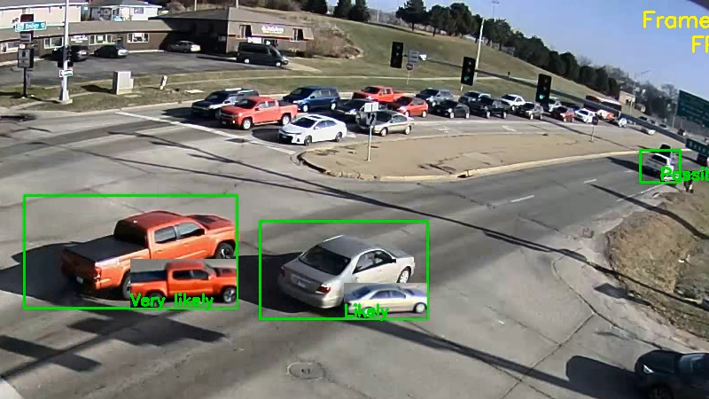
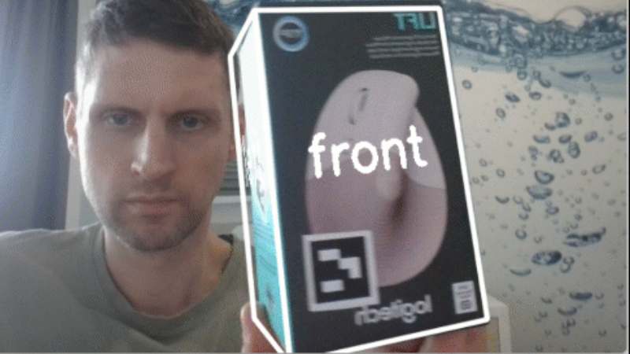

Cross-Camera Vehicle Tracking
A computer vision project focused on tracking vehicles across multiple camera views and maintaining identities through detection and matching workflows.
View on GitHubComputer Vision Engineer
Feature tracking, pose estimation, and detection pipelines using mainly OpenCV and YOLO, with experience exploring deep learning workflows in PyTorch.
I recently transitioned into Computer Vision after 20 years in technical animation and tool development for feature film production, including work at DreamWorks Animation and Digital Domain. I also have experience in independent iPhone game development and interactive applications.
My background is strongest where geometry, visual pipelines, and production-oriented engineering meet. I am focused on practical systems that turn visual data into reliable tracking, pose, and detection results.

A computer vision project focused on tracking vehicles across multiple camera views and maintaining identities through detection and matching workflows.
View on GitHub
A pose-tracking project using state-based logic to interpret motion over time and support more stable frame-to-frame analysis.
View on GitHub